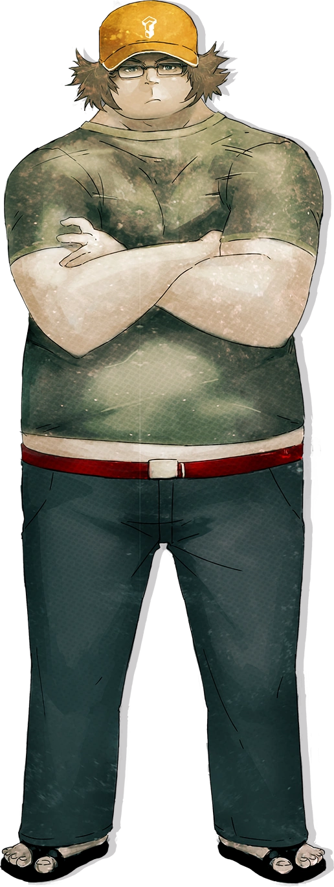

Steins;Gate Anime
"Steins;Gate" is a science fiction anime that follows the story of a young scientist named Okabe Rintarou, also known as Okabe, and his friends as they accidentally create a device that allows them to send text messages to the past, altering the course of history.
Main Plot
The main plot revolves around Okabe's discovery of the time-traveling device and the unintended consequences of manipulating the past. As the group experiments with the device, they find themselves entangled in a complex web of alternate timelines and must confront the ethical and personal dilemmas that arise.
Kurisu Makise
Kurisu Makise is a brilliant neuroscientist and one of the central characters in the anime. Her expertise in time travel contributes to the group's efforts to understand and control their newfound ability.
Okabe Rintarou (Okabe)

Okabe, also known as "Hououin Kyouma," is an eccentric scientist who leads the group in their experiments. He adopts a flamboyant persona and often speaks in theatrical language.
Itaru Hashida (Daru)
Itaru Hashida, often referred to as "Daru," is a skilled hacker and a vital member of the group. He assists in developing and modifying the time-traveling device.